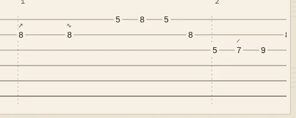

How a solo becomes a tab, in four pictures.
-
Play the solo.Any recording: wav, mp3, m4a… or a phone video.
-
Drop it in.It stays on your computer. Nothing is uploaded.
-

It writes the tab.Strings, frets, rhythm, bends, vibrato, slides.
-
Fix it, play along.Then export to Guitar Pro, MusicXML, MIDI.
Some solos are meant to be written down, not forgotten.
Which one is yours?
One installer per system. About 0.5 GB once installed, plus the engine you pick the first time it opens.
Checksums in SHA256SUMS.txt. Older versions and release notes on GitHub Releases.
The engine, drawn to scale.
The first launch asks once how Taber should listen, and suggests the one that fits your computer. Each jar's area is its download size.
NVIDIA GPU
3–4 GB
Fastest. Windows or Linux with an NVIDIA card (driver 580 or newer).
Processor
0.6 GB
The same models on the CPU. Same tabs, slower.
Lite
0.3 GB
Lighter pitch tracker, no backing-track removal. Video still works.
Your recordings never leave your computer.
Then it is yours to fix.
The editor, with a synthetic lick it has just transcribed. Every part of it plays along with the recording.

- The metronome swings on the take's own beats.110 BPM, C major, found by the engine
- Move a note to another string.↑ ↓ keeps the pitch, changes the string
- Hear the guitar alone.the original, the guitar alone, or the backing
Exports to Guitar Pro .gp5, MusicXML, MIDI, ASCII tab and alphaTex.
Still learning.
Measured on recordings it had never heard, not promised.
- Electric guitar is the hard case.39% of notes come out fully right (pitch, string and fret) on unseen electric licks; 77% on an acoustic player.
- Hammer-ons and pull-offs.Not detected from audio yet: they sound too much like picked notes.
- Chords.Solos only, one note at a time.
The first time you open it
Taber is not code-signed yet, so each system asks once.
WindowsSmartScreen: choose More info, then Run anyway.
macOSSystem Settings → Privacy & Security → Open Anyway.
Linux
chmod +x the AppImage, or install the .deb.